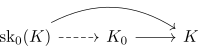
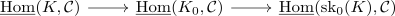
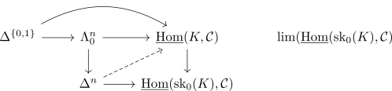
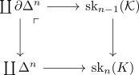
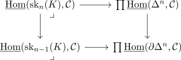
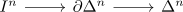
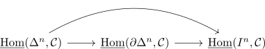
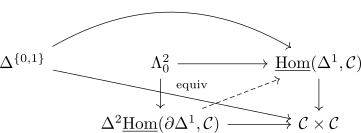

functor bijective on 0-simplices and conservative precomposition
Proposition
Let $K_0,K',\mathcal{C}$ be infinity categories and $f: K_0 \rightarrow K'$ be a Suppose $f$ is bijective on \(0\)-simplices
Then the precomposition on the internal hom
Proof
reduction 1)
w.l.o.g. we may assume that
by considering the factorization

Using the inner hom functor gives

since <functor preserves equivalence> and the composition is an equivalence, TODO
reduction 2)
It suffices to check that
induces a conservative functor, as
and by adjointness of the inner hom <>
using the joyal lifting critereon

using the universal property of the limit and induction, we may assume that
- there exists a lift
- the map $\underline{\mathrm{Hom}}(\mathrm{sk}n(K), \mathcal{C}) \rightarrow \underline{\mathrm{Hom}}(\mathrm{sk}{n-1}(K), \mathcal{C})
base case
follows for $n = 0$ by bijectivity
step
TODO
reduction 3)
it suffices to show that
is conservative
Use the pushout

applying the inner hom gives the pullback

as
- todo: inner fibration preserved under products
- conservative ?
- + conservative inner fibrations closed under pullbacks - OTOD
- inner horn inclusion as inner anodyne - TODO
using the factorization

we may reduce it to

Here the composite map is given by restriction along an inner anodyne Thus by quasicategory and trivial fibration of inner hom it is a trivial fibration, hence admitting the right lifting property against monomorphisms
As trivial fibrations are isofbirations (cf. trivial fibration as isofibration)
case $n = 1$

where
is an equivalence
using the joyal lifting critereon this reduces to a
\begin{displaymath}
\begin{tikzcd}
\Delta^{ \{0,1\}} \coprod \Delta^{ \{0,1\}} \arrow[]{r}{\cong} & \Delta^{ \{0,1\}} \times \partial \Delta^ \arrow[]{r}{} \arrow[bend left]{rr}{}1& \Delta^2 \partial \Delta^1 \cup \Lambda_0^2 \times \Delta^1 \arrow[hookrightarrow, ]{d}{} \arrow[]{r}{} \arrow[]{d}{}& \mathcal{C} \arrow[]{d}{}\\
& & \Delta^2 \times \Delta^1 \arrow[dashed]{ru}{}\arrow[]{r}{} & * \\
\end{tikzcd}
\end{displaymath}